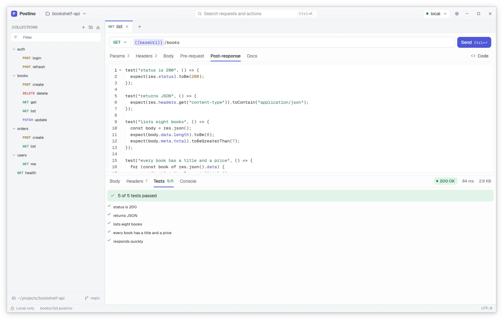

Scripts and tests in JavaScript
Run a script before a request to sign it or build data, and after it to check the response and pass values on to the next one. Scripts run in a sandboxed QuickJS engine.
test()andexpect()assertions, with results per request- Save a token from the login response into the environment
- Console output captured next to the response
